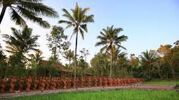

PANTAI TELUK HIJAU

Hal itu membuat sudut pandang dari Pantai Teluk Hijau Banyuwangi ini tidak terlalu luas. Namun, justru inilah yang menjadi daya tariknya.Sisi kiri dan kanan bukit yang jadi pembatas memiliki pemandangan hijau yang asri dan segar. Sisi kiri dan kanan bukit yang jadi pembatas memiliki pemandangan hijau yang asri dan segar. Awal mula ditemukannya pantai ini adalah ketika para nelayan Desa Rajegwesi berlayar mencari ikan di laut. Para nelayan tersebut dikagetkan air laut yang berwarna hijau. Rasa penasaran membawa mereka ke sana dan akhirnya menemukan sebuah pantai dengan pasir yang indah. Awal mula ditemukannya pantai ini adalah ketika para nelayan Desa Rajegwesi berlayar mencari ikan di laut.Para nelayan tersebut dikagetkan air laut yang berwarna hijau. Rasa Fenomena tersebut jarang ditemui di pantai-pantai lain di sekitar Banyuwangi. Selain itu, Pantai Teluk Hijau Banyuwangi juga memiliki pasir yang berwarna putih, sehingga sangat kontras dengan air lautan yang berwarna hijau.
penasaran membawa mereka ke sana dan akhirnya menemukan sebuah pantai dengan pasir yang indah.Pantai yang juga dinamai sebagai Green Bay ini memiliki daya tarik yang unik dibandingkan dengan pantai-pantai lainnya.Daya tariknya terletak pada air laut yang lebih berwarna hijau.Terlebih perbukitan karang yang ada di sisi kanan dan kiri Pantai Teluk Hijau ini ditumbuhi oleh pepohonan yang rindang.
Pantai Teluk Hijau memiliki lautan yang langsung berhadapan dengan Samudera Hindia. Hal ini membuat para wisatawan tidak diperkenankan untuk berenang di pantai ini.Dikhawatirkan, ombak yang besar akan membahayakan pengunjung pantai.
Pantai Teluk Hijau menyediakan fasilitas umum yang bisa dimanfaatkan oleh pengunjung.Namun, harus diakui fasilitasnya masih sangat minim. Hanya ada sebuah mushola dan toilet alam yang alakadarnya.
Jika Kawan ingin berkunjung ke pantai ini, biaya yang harus dikeluarkan cukup murah karena hanya mengikuti harga tiket masuk Taman Nasional Meru Betiri yaitu sebesar Rp5000 per orang (hari biasa) dan Rp7.500 per orang (akhir pekan dan hari libur nasional) Untuk menuju ke Pantai Teluk Hijau, pengunjung perlu mempersiapkan diri sebaik-baiknya. Pasalnya medan di pantai ini masih cukup alami sehingga beberapa di antaranya sangat menantang.TAMAN GANDRUNG TERAKOTA
"Taman Gandrung Terakota itu situs seni dan edukasi. Ada sekitar 1.000 patung Gandrung yang terbuat dari tembikar dan batu merah di sini, konsepnya seperti terakota yang ada di China," ujar Front Office Jiwa Jawa Resort bernama Mayang, saat dihubungi Kompas.com, Selasa (17/5/2022). Adapun patung-patung tersebut tampak mengenakan busana tari, dengan pose berdiri dan meliukkan tangan ke atas, seperti sedang menari. Setiap patung tersebar di tepi dan di tengah persawahan, dengan pemandangan Gunung Merapi serta Meranti. Tak hanya itu, saat berada di taman, pengunjung bisa menikmati panorama Selat Bali, kebun kopi, pohon durian, aneka jenis bambu, dan tanaman endemik setempat. Diresmikan pada September 2018, Mayang menjelaskan bahwa tempat wisata Gandrung Terakota tidak hanya menyediakan patung tari seperti namanya, tetapi juga sejumlah fasilitas lain. "Ada beberapa properti, di antaranya pendopo, ampfiteater, sanggar tari, galeri seni, restoran, kafe, dan penginapan," terang dia. Mayang menjelaskan, fasilitas amfiteater, yang terbuka untuk pertunjukan kesenian ini, telah menampilkan pertunjukan secara reguler, seperti Sendratari Meras Gandrung serta Jazz Gunung Ijen. Lalu, pengunjung bisa belajar tari di sanggar tari, maupun melihat-lihat karya seniman di galeri seni.
Jika lapar dan ingin beristirahat, Mayang menyebutkan, ada beberapa kafe dan restoran yang bisa pengunjung nikmati.
Di antaranya Roemah Tjokelat Ijen, Java Banana Coffee, dan Jiwa Jawa Resort. "Untuk ke taman gandrung, kami menjual paket Rp 100.000 orang. Sudah dapat makan minum, live show tarian Gandrung, dan private tour, sudah sama pemandu," ujar dia. Adapun live show Tari Gandrung berdurasi sekitar tujuh menit, dan hanya diadakan setiap hari Jumat, Sabtu, dan Minggu. Bagi pengunjung yang datang di luar hari tersebut, akan mendapatkan voucer pengganti untuk belanja di fasilitas yang tersedia di Taman Gandrung Terakota. Tempat wisata unik ini buka setiap hari, kecuali Senin, setiap pukul 08.00 WIB - 15.00 WIB. Jika tertarik berkunjung atau membutuhkan informasi lebih lanjut mengenai Taman Gandrung Terakota, kamu bisa menghubungi pengelola melalui media sosial, situs resmi, maupun call center mereka.
PECEL RAWON

Sebelum diluncurkan sebagai makanan khas Jember, kuliner yang memadukan pecel dan rawon sudah banyak ditemui di Kabupaten Banyuwangi, Jawa Timur. Bahkan, saking menjamurnya, kuliner ini disebut sebagai salah satu makanan khas Banyuwangi.Sebelum diluncurkan sebagai makanan khas Jember, kuliner yang memadukan pecel dan rawon sudah banyak ditemui di Kabupaten Banyuwangi, Jawa Timur. Bahkan, saking menjamurnya, kuliner ini disebut sebagai salah satu makanan khas Banyuwangi. <
Nah, untuk mendapatkan cita rasa yang khas, biasanya nasi pecel rawon disajikan sesuai dengan urutan. Pertama, nasi ditata bersama sayuran rebus di piring, kemudian diberi kuah rawon, dan terakhir diberi bumbu pecel di atas sayuran. Namun, ada juga yang disajikan dengan kuah rawon di mangkuk terpisah. Penasaran? Berikut nasi pecel rawon terbaik yang wajib dicoba saat berkunjung ke Banyuwangi!Nasi pecel rawon yang disajikan di Depot Pecel Ayu terdiri dari nasi pecel, empal bumbu, tempe bacem, dan peyek yang dilengkapi dengan semangkuk kuah rawon tanpa daging. Harganya relatif murah, hanya dengan Rp17.000,- per porsi, Sobat Pesona sudah bisa menikmati menu favorit ini. Alamat : Jalan Raya Lijen No. 80, Dusun Watu Ulo, Rejosari, Glagah, Kabupaten Banyuwangi, Jawa Timur.